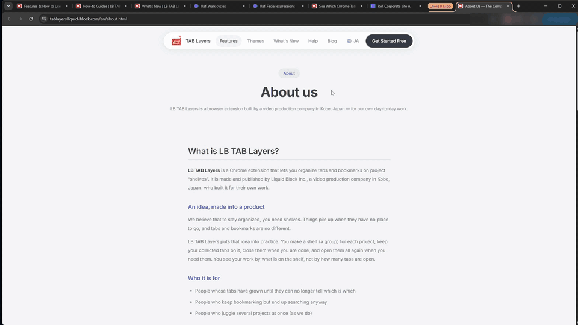

LB TAB Layers puts actions such as renaming, deleting, archiving, notes and Markdown copy in the right-click menu. What appears depends on where you right-click: a group, a saved tab, empty space in the group list, or a tab in Solo Tabs.
Right-click a group or a saved tab
| Item | What it does |
|---|---|
| Rename | Change the name of a group, or how a tab is shown |
| Notes (notepad icon) | Add a note to a tab — see Notes |
| Focus timer block (shield icon) | Block or unblock the group’s sites while the focus timer runs |
| Create split (side-by-side icon) | Make an item that opens two tabs side by side |
| Copy as Markdown | Copy the links as a Markdown list |
| Move to Group | Move a tab to another group |
| Save structure as preset (template icon) | Reuse a folder structure later |
| Archive (archive-box icon) | Put a group away without deleting it |
| Delete | Delete a group or a tab. Deleting a group also deletes its bookmark folder |
The items shown change with what you right-clicked.
Right-click empty space in the group list
| Item | What it does |
|---|---|
| New folder (folder-plus icon) | Create a new group |
| Section divider (dashed-line icon) | Insert a heading between groups |
| Folder presets (template icon) | Create a ready-made folder structure, or one of your custom presets |

Right-click a tab in Solo Tabs
| Item | What it does |
|---|---|
| Save to Folder | Pick a group and save the tab to it |
| Close Tab | Close that tab |
💡 Not sure how to do something? Try right-clicking first.
Right-click a web page
This works even with the panel closed. Right-click the page (or a link), open LB TAB Layers, choose Save to TAB Layers and pick a group.

Practical examples
Video production: hand off a reference list
You have a group called “Client A – References” with twenty saved tabs. Right-click the group and choose Copy as Markdown, then paste the list into your project notes or a message to the editor. Every link arrives as a clean Markdown list, so nobody has to open your browser to see what you collected.
Research: rename tabs so the list makes sense
Page titles are often long, or nearly identical across one site. Right-click a saved tab, choose Rename and give it a short label such as “Interview – pricing”. The original page title is kept, so you only change how the tab appears in the side panel.
Freelancing: put a finished job away
When a client project ends, right-click its group and choose Archive. The group leaves your main list but is not deleted, and you can bring it back with Restore if the client returns. Use Delete only when you are sure, because deleting a group also deletes its Chrome bookmark folder.
Students: set up each semester the same way
Build one folder structure by hand, right-click it and save it as a preset with the template-icon item. Next semester, right-click empty space in the group list and use the folder presets to create the same layout in one step instead of rebuilding it.
Tips and limits
- The menu depends on where you click. A group, a saved tab, empty space in the group list and a tab in Solo Tabs each show different items. If an item seems to be missing, check where you right-clicked.
- Solo Tabs has only two items. Tabs that are not in any group offer Save to Folder and Close Tab. Rename, notes and Copy as Markdown are for groups and saved tabs.
- Archive and Delete are different. Archive keeps everything and can be undone with Restore. Delete removes the group, its tabs and its bookmark folder.
- Rename only changes the label. It changes how a tab is shown in the side panel, not the page itself.
- Free and PRO. The free version limits how many groups you can have, so creating a new group stops working at that limit. PRO and the free trial remove it. See Groups and subgroups for the numbers.
Frequently asked questions
Q. How do I rename a group or a tab?
Right-click the group or the saved tab and choose Rename.
Q. I can’t find an item in the right-click menu.
The menu changes with where you right-click. Check whether you right-clicked a group, a saved tab, empty space in the group list, or a tab in Solo Tabs.
Q. Can I undo Archive?
Yes. Archived groups can be restored with Restore. Delete is different: it removes the group, its tabs and its Chrome bookmark folder.
Q. Is there a way to copy a whole group’s links?
Yes. Right-click the group and choose Copy as Markdown to copy its links as a Markdown list.
Q. Why does Solo Tabs show fewer menu items than a group?
Tabs in Solo Tabs are not saved yet, so the menu offers only Save to Folder and Close Tab. Save the tab to a group first to get Rename, notes and the other items.
See it in action


When in doubt, right-click.
Try every feature free for 30 days. Your data stays in Chrome’s bookmarks.
Add to Chrome — it's free →